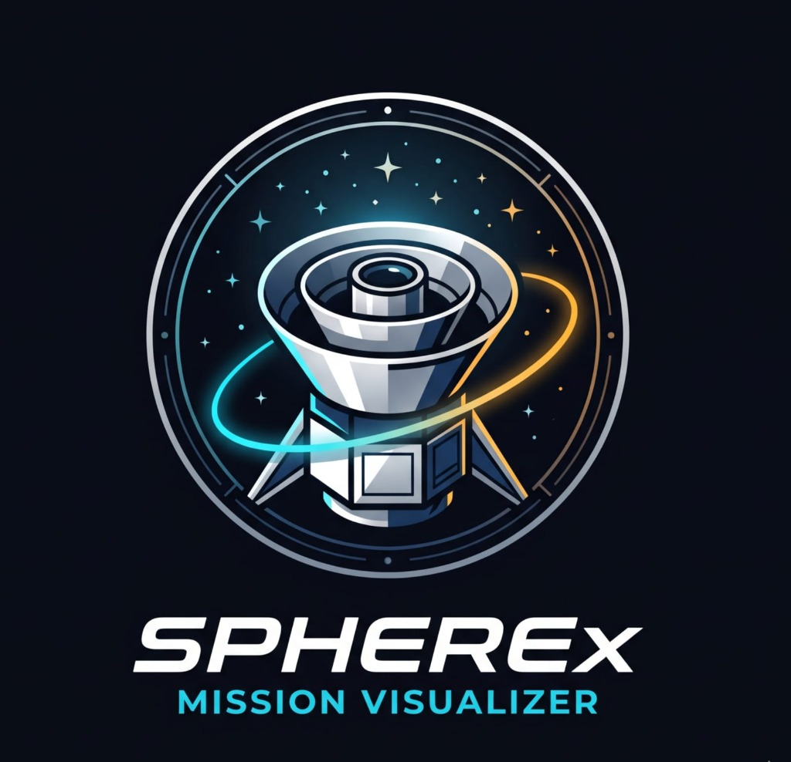

Active Target:
Barnard's Star
RA/Dec:
17h 57m 48.50s / +04° 41′ 36.2″
Observation Mode
Resolved:
RA 269.4521° · Dec +4.6934°
Mode: Sky RA/Dec
|
3 Epochs
Frame-by-Frame Blink Corridor (Frame 1/6 @ 4.0 FPS)
CURSOR:
RA: 269.452° · DEC: +4.693°
|
FRAME 1/6 · 4.0 FPS
Barnard's Star
High-Proper-Motion M Dwarf
J2000 RA/Dec:
17h 57m / +04° 41′
Total Proper Motion:
10.36″/yr
3.05µm Ice Depth:
ΔF/F = 0.38
102-Band Spectral Diagnostic
Spectral Energy Distribution (0.75 – 5.0 µm)
Continuum Flux
3.05µm H₂O Ice Trough
NASA ASTROPHYSICS • ACTIVE IN ORBIT (DR1 RELEASED NOV 2026)
Medium-Class Explorer (MIDEX)
SPHEREx: Mapping the Cosmos in 102 Colors
Spectro-Photometer for the History of the Universe, Epoch of Reionization, and Ices Explorer
SPHEREx is an all-sky near-infrared space observatory conducting the first-ever all-sky near-infrared spectral survey. While flagship observatories like JWST function as cosmic microscopes—zooming into narrow target fields in extreme detail—SPHEREx functions as a wide-angle panoramic camera. Scanning the entire celestial sphere every six months, it maps hundreds of millions of galaxies and stars across 102 contiguous infrared wavelength bands.
Lead Agencies & Partners:
NASA JPL
Caltech (PI: Jamie Bock)
BAE Systems
KASI (Korea)
SpaceX Falcon 9

Official Mission Insignia
Launch Date
Mar 11, 2025
SpaceX Falcon 9
Spectral Bands
102 Colors
0.75 – 5.0 µm NIR
Galaxies Mapped
> 450 Million
3D Cosmic Map
Stars Surveyed
> 100 Million
Milky Way Galaxy
Sky Coverage
100% All-Sky
4 Maps / 25 Mo
Orbit Altitude
700 km
Sun-synchronous LEO
Team Pioneer Matrix
NASA International Space Apps Challenge 2026
Engineered for the NASA International Space Apps Challenge 2026 to provide browser-native scientific telemetry analysis and proper-motion dipole discovery for the SPHEREx mission.
NASA Space Apps Challenge 2026
Team: Pioneer Matrix
Reference Catalogs
High-Proper-Motion Benchmark Targets
Barnard's Star
M4V Dwarf
RA: 17h 57m 48.5s · Dec: +04° 41′ 36″
Total PM: 10.36″/yr · PA: 355.8°
WISE 0855-0714
Y-Dwarf
RA: 08h 55m 10.8s · Dec: -07° 14′ 42″
Total PM: 8.15″/yr · PA: 135.2°
Epsilon Indi B
T1+T6 Binary
RA: 22h 03m 21.7s · Dec: -56° 47′ 10″
Total PM: 4.70″/yr · PA: 125.0°